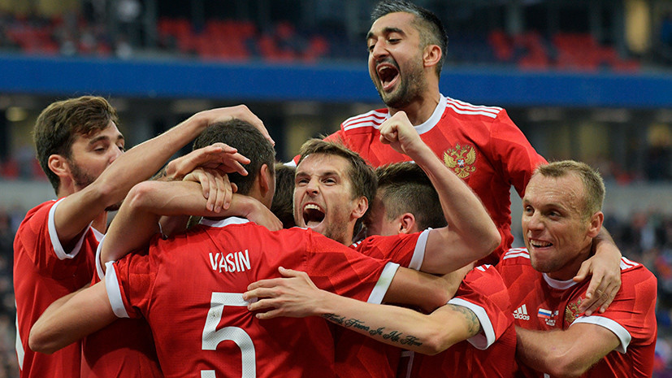
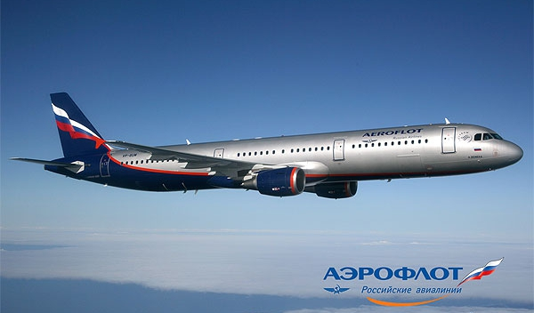
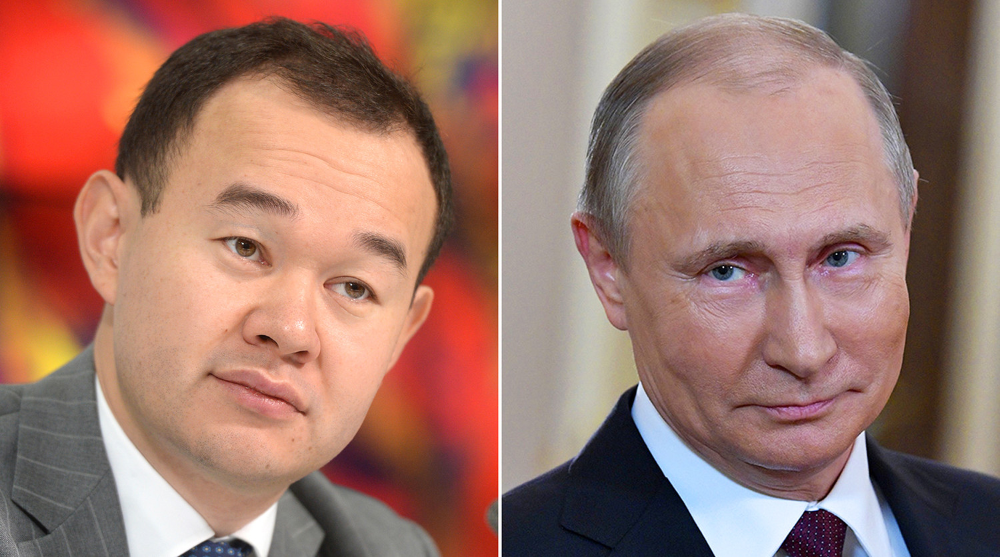

В Минске прошло заседание Синода РПЦ, на
котором высшие иерархи церкви приняли
решение разорвать отношения с
Константинополем в качестве ответа
на шаги Вселенского патриархата,
который ранее признал каноничными
раскольнические религиозные
организации Украины. Мировое
православие раскололось на две части,
однако в РПЦ надеются, что компромисс все еще
возможен.
Футбол на уровне
Сборная России по футболу на стадионе
Фишт в Сочи нанесла
поражение национальной команде
Турции в рамках Лиги наций УЕФА. Команда
Станислава Черчесова теперь в шаге от
завоевания первого места в группе,
которое позволит выйти в дивизион А, где
выступают сильнейшие команды Европы.

Сборная России по футболу
Последнее послание Хокинга
Британский физик-теоретик Стивен Хокинг в
своей последней книге Краткие
ответы на большие вопросы заявил, что Бога
не существует. Об этом сообщает CNN. Ученый
неоднократно заявлял, что является
атеистом. По его словам, все вещи,
происходящие в мире, можно объяснить
физическими законами.
Бога нет, никто не управляет
Вселенной, — говорится в тексте книги.
Как отмечает телеканал, ученый сделал в
книге несколько других заявлений, в том
числе, Хокинг написал, что жизнь за пределами
Земли существует, и предсказал, что в течение
100 лет человечество сможет
путешествовать в любую точку Солнечной
системы.
Китай запустит на орбиту
искусственную луну в 2020 году
В Китае специалисты из
Исследовательского института
аэрокосмических наук и
микроэлектроники города Чэнду
разработали предназначенный для
освещения спутник — искусственную
луну. По словам председателя
института Ву Чунфэня, спутник будет
запущен в 2020 году, сообщает издание
People. Яркость спутника
в восемь раз выше, чем у настоящей Луны,
отмечает Чунфэнь. Он сможет освещать
районы диаметром 10-80км и станет
альтернативой уличным фонарям.
Тестирование спутника началось еще
несколько лет назад и теперь он уже почти готов к
запуску. Разработчики не раскрывают
подробности технологии, но отмечают,
что на создание спутника их вдохновила
работа французского художника,
изобразившего цепочку зеркал,
окружающих Землю и отражающих
свет. Беспокоиться о том, что искусственная
луна помешает жителям или ночным
животным, не стоит, заверяют
разработчики. Его свечение будет мягким
и рассеянным, поэтому не должно оказать
негативного влияния, считают они.
Выбора нет: Twitter раскрыл
российских троллей
Компания Twitter опубликовала архив
сообщений, которые якобы были
отправлены российской и иранской
фабриками троллей за
последние пять лет с целью распространения
политической пропаганды.
Сообщается, что тролли пытались повлиять
не только на исход президентских выборов в США, но
и на референдум по Brexit, когда
Великобритания проголосовала
за выход из Европейского союза. За пять лет
совместными силами они выложили 10 млн
твитов, включающих в себя 2млн изображений,
видео и других единиц медиа-контента. Три
ключевых слова, которые чаще всего
встречаются в публикациях этих ботов
саудиты, Иран и Трамп. Отдельное внимание
уделялось и европейским лидерам,
например, Терезе Мэй, Эммануэлю
Макрону и Ангеле Меркель. Кроме того,
многие тролли, пишущие на английском языке,
вступались за Россию, называя
расследование российского
дела спецпрокурора США Роберта
Мюллера охотой на ведьм.

Аэрофлот
Аэрофлот совместно с Минтрансом прорабатывают вопрос
о выделении допсредств на субсидируемые авиаперевозки
Аэрофлот совместно с Минтрансом РФ
прорабатывает вопрос о выделении
дополнительных средств на перевозки по
субсидируемым тарифам в города
Дальнего Востока, Крым и Калининград.
Ожидается, что до конца 2018 года со стороны
Минтранса будет дополнительно
выделено 300 млн рублей. Продажи
планируется открыть в ближайшее время.
Воспользоваться субсидируемыми
перевозками в пункты Дальнего
Востока, Крыма и Калининград в
экономическом классе могут граждане
Российской Федерации в возрасте до 23 лет и
свыше 60 лет (для женщин — свыше 55 лет), инвалиды
1-й группы, инвалиды с детства II и III группы,
сопровождающие инвалида 1-й группы
или ребенка-инвалида. Период
окончания перевозок в соответствии с
действующей редакцией
Постановления Правительства РФ 215
определён датой 1 декабря. Помимо
программы субсидируемых тарифов,
авиакомпания Аэрофлот продолжает
продажу авиабилетов в рамках собственной
программы плоских тарифов.
Билет по фиксированному —
плоскому тарифу в
экономический класс может приобрести
любой пассажир без каких-либо
ограничений. В настоящее время
плоские тарифы действуют на
рейсах Аэрофлота из Москвы во Владивосток,
Южно-Сахалинск, Хабаровск,
Петропавловск-Камчатский, Магадан,
Калининград, Симферополь и в обратном
направлении, а с 2018 года программа
плоских тарифов действует и на
рейсах авиакомпании Россия
между Москвой и пунктами Дальнего
Востока. Так, стоимость билета на рейсы
Аэрофлота в Калининград составляет 9350
руб. или 5610 руб. в одну сторону. Во Владивосток,
Южно-Сахалинск, Хабаровск,
Петропавловск-Камчатский, Магадан и
обратно составляет 25000 руб. или 15000 руб. в одну
сторону, включая таксы и сборы. Стоимость
билета на рейсы авиакомпании
Россия в города Дальнего
Востока и обратно составляет 22000 руб.
или 13200 руб. в одну сторону.
Ордена после драки: Путин наградил жертв Кокорина и Мамаева
Избитых Александром Кокориным и Павлом
Мамаевым чиновников Дениса Пака
и Сергея Гайсина наградили по указу
российского президента Владимира
Путина. Как говорится в документе,
размещенном на портале правовой
информации, Пак представлен к медали
ордена За заслуги перед
Отечеством II степени, а Гайсин
награжден орденом Александра Невского.

Денис Пак и Владимир Путин
Из указа следует, что оба были награждены
За большой вклад в реализацию
проекта Единая модульная
платформа, позволившего создать
широкий модельный ряд отечественных
автомобилей. Помимо Пака и
Гайсина госнаграды получили
еще 18 человек. В основном это сотрудники
Минпромторга и научного центра НАМИ,
который проводит исследования в
области автомобильных технологий.
Известно, что НАМИ занимается в том числе и
реализацией проекта
Кортеж, в рамках которого на
единой модульной платформе создаются
лимузин, внедорожник, седан и минивэн
представительского класса. Как ранее
сообщал министр промышленности и
торговли Денис Мантуров, из
федерального бюджета на этот проект
было выделено более 12 млрд рублей.
Президентский лимузин проекта
Кортеж Путин впервые опробовал
на инаугурации 7 мая 2018 года и остался им
доволен.
Спустя полгода награда за успешную работу
нашла своих героев. По иронии судьбы,
это совпало с не самыми счастливыми
событиями в их жизни. Напомним, Пак и
Гайсин получили повреждения разной
тяжести в драке с футболистами
Кокориным и Мамаевым. Инцидент, по
итогам которого на игроков было
заведено уголовное дело о
хулиганстве, а сами они были отправлены
в СИЗО, произошел 8 октября в одном из кафе в
центре Москвы. Известный спортивный
комментатор Василий Уткин поставил
под сомнение то, что события в кафе и
присвоение чиновникам госнаград
не связаны.
Было бы смешно, если это
взаимосвязано. Но вообще
обычно эта бюрократия занимает сильно
больше недели, — написал журналист
в своем твиттере.
Сейчас Кокорин и Мамаев по решению суда
содержатся под стражей в СИЗО №2
Бутырка. Если их апелляции
по поводу заключения в СИЗО будут
отклонены, то они пробудут в следственном
изоляторе до 8 декабря. Также сегодня
адвокат форварда Зенита
Олег Попов дал интервью Первому каналу, в
котором заявил, что его клиент не только не
участвовал в драке с водителем
Виталием Соловчуком, но и вовсе
пытался прекратить потасовку.
Соловчук — это третий пострадавший
от рук Кокорина и Мамаева, помимо
Пака и Гайсина. Мужчина работает
водителем ведущей Первого
канала Ольги Ушаковой и вступил в
конфликт с футболистами в центре Москвы,
около гостиницы Пекин. По
его словам, он пытался утихомирить
молодых людей, которые пинали чужие
машины.
Как видно на видеозаписи, Саша
Кокорин все это время пытался со своей
стороны разнять конфликтующие
стороны и пытался остановить вот этот
весь процесс, — сказал Попов. Однако в
ролике содержатся кадры того, как
Кокорин-старший бьет Соловчука ногой.
Тем не менее, пока Кокорин и Мамаев без
душа и спортзала проводят дни в
карантинном отделении
Бутырки, в числе их
защитников наблюдается
существенное пополнение. Так, старший
тренер Звезды Алексей Попов
выразил несогласие с тем, что игроки
заслужили заключения в тюрьму.
Все мы ошибаемся, все мы бухаем и
деремся: что-то никто в тюрьму из-за этого не
попадает. А тут такой непонятный
резонанс: есть два футболиста, которые потом
и кровью деньги зарабатывают, не воруют
их и не отбирают, а их проклинают и
считают врагами народа — это тоже не
дело. Да, они совершили проступок и
должны за него понести
соответствующее наказание,
но то, что сейчас происходит, — это цирк, в нашей
стране который продолжается
уже на протяжении 20-30 лет, — сказал
специалист в эфире радиостанции
Эхо Перми.
Помимо Попова поддержал Кокорина и
полузащитник Крыльев
Советов Алан Чочиев, на чьей свадьбе в
Северной Осетии игрок
Зенита стрелял в воздух из
пистолета, чем вызвал осуждение общества.
Брат, тебе кое-что передали от нас, знай,
что каждую секунду люди за тебя
переживают и думают о тебе! Я знаю, что ты
сильный. Сколько народу тебя
критикует, столько и поддерживает!
Скоро мы увидимся, брат! Мы развернем этот
народ к себе! Ты сильный! Я с вами каждую
секунду, — написал Чочиев
винстаграме.
Рассмотрение апелляций Кокорина и
Мамаева должно состояться 19 октября.
В случае их удовлетворения футболисты
могут быть выпущены из СИЗО в течение трех дней.
 7
7